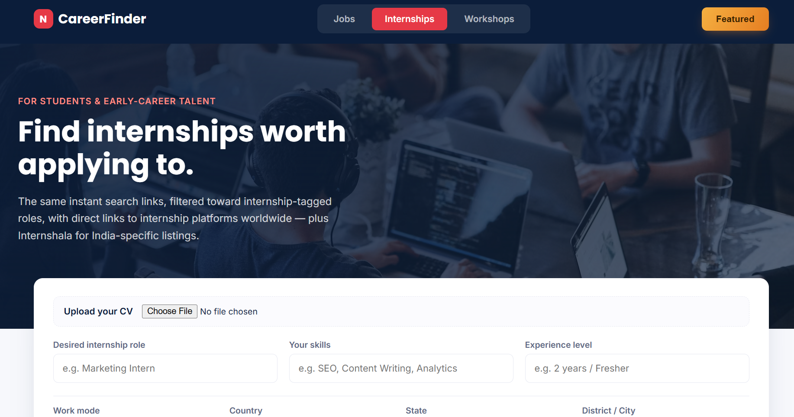

Internships & Workshops
How to Find Internships and Skill Workshops Without Checking Every Site

Internship listings don't live in one place. Neither do workshops. A company might post an internship on LinkedIn and nowhere else. A designer running a weekend workshop might only list it on Eventbrite or Meetup, never on a job board at all. If you're only checking one or two sites, you're missing most of what's actually out there.
Why internships and workshops are harder to search than regular jobs
Regular job postings tend to cluster on the big platforms — LinkedIn, Indeed, Naukri. Internships and workshops don't follow that pattern. Internships often get buried inside general job boards, tucked under filters most people never touch, or listed only on internship-specific sites like Internshala. Workshops are worse — they're scattered across event platforms (Eventbrite, Meetup), skill-training sites (Skillshare), and course platforms that don't overlap with job search tools at all.
That means a search strategy built for "find a job" doesn't actually work for "find an internship" or "find a workshop" — you need to be checking a different, wider set of places.
A faster way to search both
Instead of remembering which five or six sites to individually check depending on what you're looking for, you can enter your role or topic once and get ready-to-open search links across the right set of platforms automatically — internship boards for internship searches, event and skill-training platforms for workshops.
A simple routine
- Pick your mode. Searching for a role to intern in, or a skill to learn in a workshop — the right platforms differ, so start by choosing which one you're after.
- Enter your topic and location once. No need to retype it on every individual site.
- Open each pre-filled link. Go through the results already filtered for you, one tab at a time.
Check back often
Workshops especially tend to fill up or expire fast — a weekend session posted on Monday can be gone by Wednesday. Internships move quickly too, particularly around the start of a new academic term. Running this kind of search every few days, rather than once a month, means you catch things while they're still open.

Try this yourself, free. CareerFinder builds ready-to-open search links for internships and workshops — Internshala, Eventbrite, Meetup, Skillshare and more — in one go.
Search internships & workshops →The bottom line
Internships and workshops aren't hiding — they're just spread across more places than a typical job search. One search that reaches all of them beats checking each site by hand, every time.